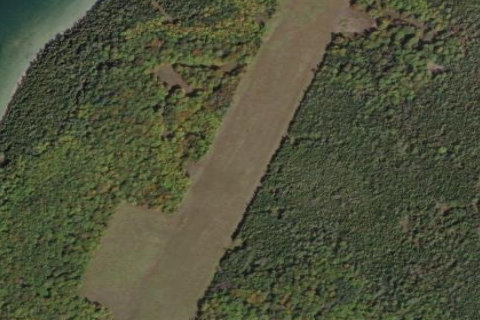

Little Summer Island, MI

Aerial imagery source: Esri, Vantor, Earthstar Geographics, and the GIS User Community
| Elevation | 604 ft |
|---|---|
| CTAF | 122.9 |
| Coordinates | 45.61284, -86.6935 |
Notes
[shortfield] Location Overview Little Summer Island sits in Lake Michigan's Garden Peninsula region, part of Delta County's Fairbanks Township, just west of the Fox Islands and near its larger neighbor, Summer Island. The island is uninhabited, with no permanent residents, roads, or built infrastructure beyond a partial perimeter track and the airstrip itself. Access is almost entirely by boat or small aircraft, giving it a genuinely isolated, backcountry feel typical of Lake Michigan's outer islands. Camping & Recreation The island offers primitive, undeveloped camping near the grass airstrip, with no facilities such as toilets, water, or fuel on site — visitors are expected to pack in everything they need and pack out their trash. Recreational draws include fishing, hunting, hiking informal paths, and simply enjoying the solitude of a rarely visited island. It has become something of a word-of-mouth destination among fly-in and boat-in camping enthusiasts looking for a quiet weekend escape. Notes & Warnings The runway is a mowed grass/turf strip, reportedly around 2,400–2,500 feet long, suitable for small general aviation aircraft operating under visual flight rules only. There is no lighting, navigation aids, windsock maintenance guarantee, fuel, or hangar facilities, so pilots should treat it as an unimproved backcountry airstrip: check current surface conditions, wildlife activity, and obstructions before landing, and be prepared for a fully self-sufficient stay. Weather on the open lake can change quickly, and there's no ground support if problems arise. History Like much of the surrounding Garden Peninsula island cluster, Little Summer Island was heavily logged in the late 1800s, and it has remained undeveloped and uninhabited ever since. The grass airstrip is a comparatively recent addition, noted in botanical surveys from the early 2000s as newly cut, and it grew in reputation through backcountry aviation circles and pilot forums describing it as a well-kept, welcoming stop for cross-country flights around Lake Michigan. Its low profile and lack of formal management have kept it a niche, informal destination rather than a developed public airport.